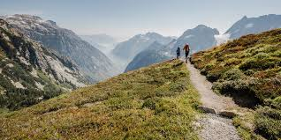

Our Story
Founded in 2022, in the city of Orlando, our team was looking for a way to locate all our local trails and see their reviews. From there "That Good Dirt" was born and the rest is history.
Our Mission
The main goal is to help people get outside and see where their nearest, best, and future planned trails can be.

What's Next?
Now while you use "That Good Dirt" you can search for nearby trails in your state or wherever you are vacationing! Set your radius and select whether you want a biking or a hiking trail. From there, the possibilities are endless. Go off and enjoy your next adventure!